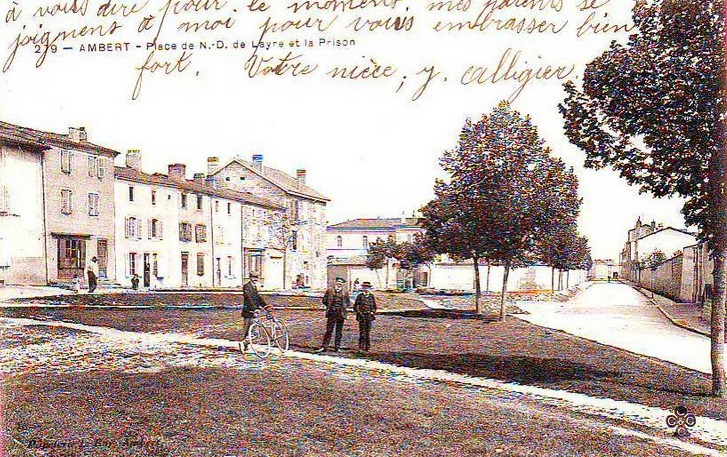
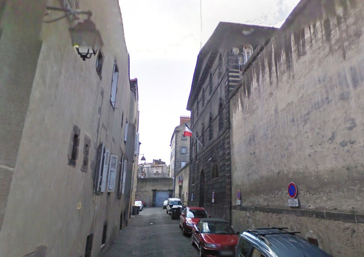
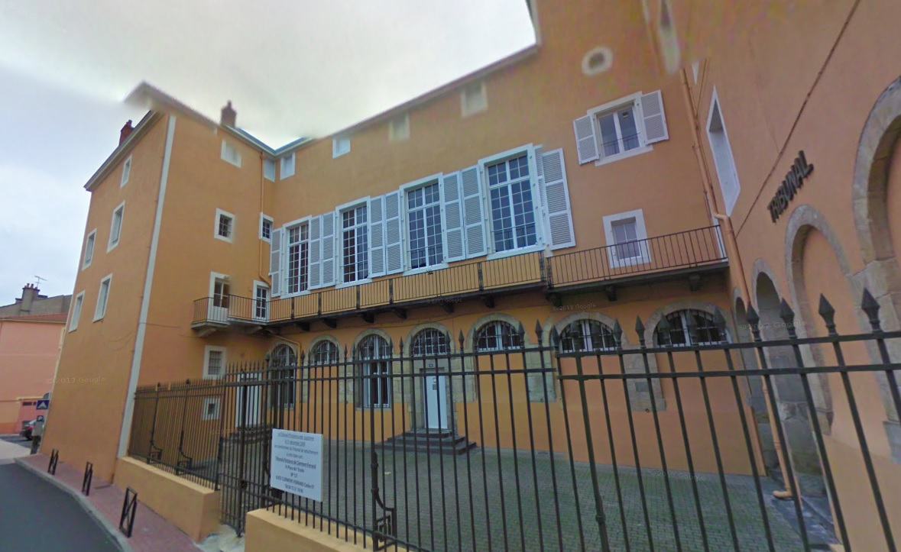
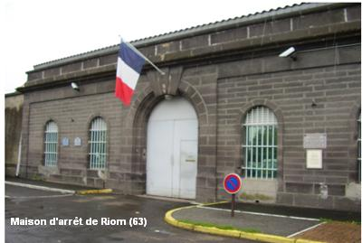
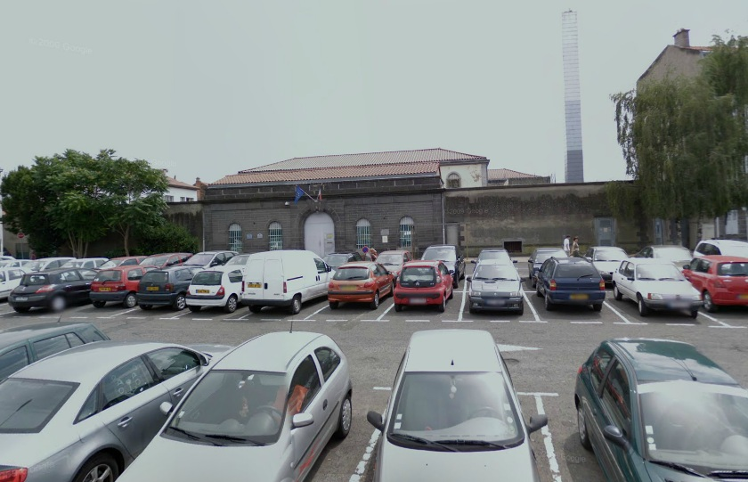
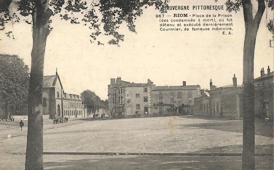

| Département | Images | Ville | Nom | Adresse | Période | Capacité | Histoire du lieu | Nombre d'exécutions |
| Puy-de-Dôme (63) |  |
Ambert | Maison d'arrêt et de correction | Place Notre-Dame-de-Layre | 1836-1926 | Construite en même temps que le tribunal. 24 cellules. Après sa démolition, on y construit le centre des Finances Publiques : ce dernier déménage en 2014 dans les locaux du palais de justice, désaffecté depuis les années 1980. | Aucune exécution | |
| Puy-de-Dôme (63) |  |
Clermont-Ferrand | Maison d'arrêt et de correction | 1, rue de la Prison | 1830-2015 | 70 places, 19 surveillants (1962) | Ancien couvent du XVIe siècle situé en plein centre ville, la prison de la capitale auvergnate reste de taille réduite, car la justice du Puy-de-Dôme est rendue dans la sous-préfecture de Riom, "mieux équipée" donc sur le plan carcéral. La prison, voisine de la mairie, comprend dix-neuf cellules d'environ 14m² chacune. Son état de délabrement fait l'objet de nombreux commentaires et articles de presse au début du XXIe siècle. Elle est fermée officiellement depuis le 14 septembre 2015. Les derniers occupants avaient été transférés le 09 du même mois dans les prisons riomoises, en attendant l'ouverture du nouveau grand centre pénitentiaire, toujours à Riom, mais en périphérie. | Aucune exécution |
| Puy-de-Dôme (63) |  |
Issoire | Maison d'arrêt | 24, rue du Palais | 1801-1934 ; 1941-1950 | Ancien couvent des Bénédictines, fermé sous la Révolution. Située dans le même bâtiment que le tribunal. Un seul gardien, fait mentionné en juillet 1926 lors de l'évasion d'un nommé Raymond Vena, purgeant six mois de prison et devenu employé au greffe. Après sa fermeture, dépôt d'archives du tribunal jusqu'à la désaffection de ce dernier en 2009 : prévu pour accueillir un musée dans les années à venir. | Aucune exécution | |
| Puy-de-Dôme (63) | Riom | Maison centrale | 17, rue Soubrany | 1820-2016 | Fermée le 31 janvier 2016, en même temps que la maison d'arrêt, avec le transfert ce jour-là de 124 détenus jusqu'au nouveau centre de détention. | Aucune exécution | ||
| Puy-de-Dôme (63) |    |
Riom | Maison d'arrêt, de justice et de correction | 5, place des Martyrs-de-la-Résistance (ex-place Desaix) | 1860-2016 | 80 places, 17 surveillants (1962) | Fermée le 31 janvier 2016, en même temps que la maison centrale, avec le transfert ce jour-là de 129 détenus jusqu'au quartier d'arrêt du nouveau centre de détention. | Cinq exécutions en 1912, 1926, 1933, 1947 et 1950. |
| Puy-de-Dôme (63) | Thiers | Maison d'arrêt | Rue des Groslières (actuelle rue Mancel Chabot) | -1934 | Située à côté de l'hospice. Réouverte après le 25 novembre 1941. A partir de 1971, l'endroit devient une antenne du Lycée Municipal, accueillant la Section d'Éducation Spécialisée jusqu'au début des années 2000. Voilà ce qu'en dit l'auteur d'une nouvelle "Mon ami Beloche", parue dans le Matin le 21 août 1884 : La prison, chez nous, confinait au tribunal. Cette salle d'audience où venait de sombrer l'honneur de notre pauvre Jacquet, elle se trouvait située de plain pied avec le préau de la terrible maison d'arrêt. Le mur était mitoyen. Ce petit vasistas de forme ovale, coupé de deux barreaux en croix, qu'on voyait là-haut sur la droite de la salle, prenait jour sur le préau, et bien souvent, autrefois, avec Jacquet, et tous ceux de la bande joyeuse dont nous relations les exploits au début de cette histoire, grimpant sur les épaules l'un de l'autre, nous nous étions hissés jusqu'à ce vasistas pour voir les prisonnniers à l'heure de la promenade. Ah, ce préau, mal pavé de dalles inégales entre lesquelles se montraient quelques rares brindilles d'une herbe aussitôt flétrie que poussée, avec ses deux bancs de pierre où la mousse mettait sa lèpre jaunâtre, quel effroi, je me rappelle, il nous inspirait ! Si exigu, si resserré entre ses hautes murailles ! Comme on devait respirer mal à l'aise dans cet enclos misérable, et comme les jambes devaient avoir peine à s'y dégourdir ! Et quelle odeur d'humidité malsaine s'exhalait de ce puits, où l'on grelottait rien qu'à voir la mine piteuse qu'y faisait le soleil, quand, par hasard, il voulait bien hasarder de ce côté-là un bout de ses rayons. De la prison nous ne dirons trop rien, ne l'ayant jamais fréquentée ni peu ni prou, comme bien on pense. Elle paraissait propre et bien tenue. Construction neuve d'ailleurs ou à peu près. Il n'y avait pas plus de dix ou quinze ans, on l'avait en quelque sorte rebâtie de fond en comble, en même temps que le tribunal; et de l'ancienne prison, il n'était resté qu'une vieille tour, vénérable débris d'un antique castel de l'époque féodale dont la silhouette, sans grand caractère, s'apercevait de loin dans la plaine, et qui dans le panorama de la ville était, avec le clocher de notre vieille église, le point saillant sur lequel l'il tout d'abord instinctivement se posait. Pour le voyageur qui ne faisait que passer chez nous, la vieille tour demeurait comme un jalon, comme un point de repère dans le souvenir. Elle ne servait plus à rien d'ailleurs, et depuis longtemps on avait cessé d'y loger les prisonniers, tant sa solidité inspirait peu de confiance. Mais l'administration l'avait conservée à titre de curiosité historique, la question d'art n'ayant rien à voir, hâtous-nous de le dire, dans ce grossier cylindre de maçonnerie, décrépit, effrité, sillonné du haut en bas de longues lézardes menaçantes, et percé çà et là de meurtrières dégradées par le temps, d'où pendaient quelques tiges chétives de giroflées maladives aux couleurs flétries. Elle tombait littéralement en poussière, la vieille tour, et chaque coup de vent, comme un grand coup de brosse, lui enlevait quélques miettes poudreuses de son revêtement de plâtre. La façade principale de la prison neuve prenait vue sur la rue des Groslières. Elle était triste, sévère et sombre, comme il convient à toute prison qui a conscience de sa mission civilisatrice et ne cherche pas à dissimuler son état social. Construite pour inspirer la terreur aux méchants, elle poussait le zèle professionnel jusqu'à terroriser même les bons. Un grand mur gris, percé de rares fenêtres étroites et longues, garnies de forts barreaux une porte haute en cur de chêne, blindée d'une plaque de tôle, émaillée de grosses têtes de clous et qui tournait lentement sur ses gonds avec un mugissement à la fois criard et plaintif dont toute la prison retentissait et tremblait. La porte ouverte laissait voir un escalier à pente raide, sans rampe, resserré entre deux murailles nues si rapprochées qu'un bon gendarme, de carrure même or(linaire, devait, pour y passer sans encombre, se présenter de profil et tourner son tricorne en colonne. Elle attristait, cette prison, tout au bout de la rue des Groslières. Oui, positivement, quand vous passiez là, devant cette énorme bâtisse d'aspect sinistre, une sensation de froid vous saisissait tout à coup des talons à la nuque, et il est certain que, dans tout le voisinage, il y avait moins de lumière,, moins d'air respirable, moins de gaieté, moins de chansons, et qu'à l'atelier le marteau retentissait moins joyeusement sur l'enclume. Ce que devait être l'intérieur d'un pareil enfer, notre imagination d'enfant cherchait souvent à se le figurer, et ce qu'elle nous en retraçait nous faisait littéralement frémir. |
Aucune exécution |
{kind=link}
{kind=link}
{kind=link}
{kind=link}
{kind=link}
{kind=link}